NCERT Solutions For Class 12 Chemistry Chapter 8 The d and f Block Elements
Topics and Subtopics in NCERT Solutions for Class 12 Chemistry Chapter 8 The d and f Block Elements:
| Section Name | Topic Name |
| 8 | The d – and f – Block Elements |
| 8.1 | Position in the Periodic Table |
| 8.2 | Electronic Configurations of the d-Block Elements |
| 8.3 | General Properties of the Transition Elements (d-Block) |
| 8.4 | Some Important Compounds of Transition Elements |
| 8.5 | The Lanthanoids |
| 8.6 | The Actinoids |
| 8.7 | Some Applications of d – and f -Block Elements |
NCERT Solutions CBSE Sample Papers ChemistryClass 12 Chemistry
NCERT IN TEXT QUESTIONS
8.1. Silver atom has completely filled d orbitals (4d10) in its ground state. How can you say that it is a transition element?
Ans: The outer electronic configuration of Ag (Z=47) is 4d105s1. It shows+1 and + 2 O.S. (in AgO and AgF2). And in + 2 O.S., the electronic configuration is d9 i.e, d-subshell is incompletely filled. Hence, it is a transition element.
8.2. In the series Sc(Z = 21) to (Z = 30), the enthalpy of atomisation of zinc is the lowest i.e., 126 kJ mol-1. Why?
Ans: The enthalpy of atomisation is directly linked with the stability of the crystal lattice and also the strength of the metallic bond. In case of zinc (3d104s2 configuration), no electrons from the 3d-orbitals are involved in the formation of metallic bonds since all the orbitals are filled. However, in all other elements belonging to 3d series one or more d-electrons are involved in the metallic bonds. This means that the metallic bonds are quite weak in zinc and it has therefore, lowest enthalpy of atomisation in the 3d series.
8.3. Which of the 3d series of the transition metals exhibits the largest number of oxidation states and why?
Ans: Manganese (Z = 25) shows maximum number of O.S. This is because its outer EC is 3d54s2. As 3d and 4s are close in energy, it has maximum number of e-1 s to loose or share. Hence, it shows O.S. from +2 to +7 which is the maximum number.
8.4.
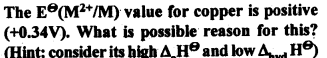
Ans.
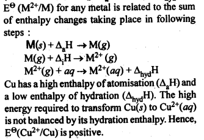
8.5. How would you account for the irregular variation of ionisation enthalpies (first and second) in the first series of the transition elements?
Ans: There is a irregularity in the IE’s of 3d-series due to alternation of energies of 4s and 3d orbitals when an e-1 is removed. Thus, there is a reorganisation energy accompanying ionization. This results into release of exchange energy which increases as the number of e-1 s increases in the dn configuration. Cr has low 1st IE because loss of 1 e- gives stable EC (3d6). Zn has very high IE because e~ has to be removed from 4s orbital of the stable configuration (3d10 4s2) After the loss of one e–, removal of 2nd e–, becomes difficult. Hence, 2nd IE’s are higher and in general, increase from left to right. However, Cr and Cu show much higher values because 2nd e– has to be removed from stable configuration of Cr+ (3d5) and Cu+ (3d10)
8.6. Why is the highest oxidation state of a metal exhibited by its fluoride and oxide only? (C.B.S.E. Delhi 2010)
Ans: Both fluorine and oxygen have very high electronegativity values. They can oxidise the metals to the highest oxidation state. As a result, the highest oxidation states are shown by the fluorides and oxides of the metals; transition metals in particular.
8.7.Which is a stronger reducing agent Cr2+ or Fe2+ and why?
Ans: Cr2+ is a stronger reducing agent than Fe2+. This is because E°(Cr3+/Cr2+) is negative (- 0.41V) whereas E°(Fe3+/Fe2+) is positive (+ 0.77 V). Thus, Cr2+ is easily oxidised to Fe3+ but Fe2+ cannot be easily oxidised to Fe3+.
8.8.Calculate the ‘spin only’ magnetic moment of M2+(aq) ion (Z = 27).
Ans:
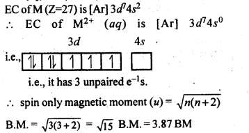
8.9.Explain why Cu+ ion is not stable in aqueous solutions?
Ans: Cu+ (aq) is not stable, while Cu2+ (aq) is stable. This is becuase ΔhydH of Cu2+(aq) is much higher than that of Cu+(aq) and hence it compensates for the 2nd IE of Cu. Thus, many Cu(I) compounds are unstable in aqueous solution and undergo disproportionation as follows :
2 Cu+ —–> Cu2+ + Cu
8.10. Actinoid contraction is greater from element to element than lanthanoid contraction. Why? (C.B.S.E. Sample Paper 2011, Jharkhand Board 2010)
Ans: The decrease or contraction in atomic radii, as well as ionic radii in actinoid elements (actinoid contraction), is more as compared to lanthanoid contraction because 5/ electrons have more poor shielding effect as compared to 4f electrons. Therefore, the effect of increased nuclear charge leading to contraction in size is more in case of actinoid elements.
NCERT EXERCISES
8.1. Write down the electronic configuration of (i) Cr3+ (ii) Pm3+ (iii) Cu+ (iv) Ce4+(v) Co2+ (vi) Lu2+(vii) Mn2+ (viii) Th4+.
Sol: (i) Cr3+ = [Ar]183d3
(ii)Pm3+ = [Xe]54 4f4
(iii)Cu+ = [Ar]18 3d10
(iv)Ce4+ = [Xe]54
(v)Co2+ = [Ar]18 3d7
(vi)Lu2+ = [Xe]54 4f14 5d1
(vii) Mn2+ = [Ar]18 3d5 (viii)Th4+= [Rn]86
8.2. Why are Mn2+ compounds more stable than Fe2+ towards oxidation to their+3 state?
Sol: Electronic configuration of Mn2+ is 3d5. This is a half-filled configuration and hence stable. Therefore, third ionization enthalpy is’very high, i. e., third electron cannot be lost easily. Electronic configuration of Fe2+ is 3d6. It can lose one electron easily to achieve a stable configuration 3d5.
8.3. Explain briefly how+2 state becomes more and more stable in the first half of the first row transition elements with increasing atomic number?
Sol: Here after losing 2 electrons from j-orbitals, the 3d-orbital gets gradually occupied with increase in atomic number. Since the number of unpaired electrons in 3d orbital increases, the stability of the cations (M2+) increases from Sc2+ to Mn2+.
8.4. To what extent do the electronic configurations decide the stability of oxidation states in the first series of the transition elements? Illustrate your answer with examples.
Sol: In the first series of transition elements, the oxidation states which lead to exactly half-filled or completely filled d-orbitals are more stable. For example, Mn (Z = 25) has electronic configuration [Ar] 3d5 4 s2. It shows oxidation states + 2 to + 7 but Mn (II) is most stable because of half-filled configuration [Ar] 3d5. Similarly Sc3+ is more stable then Sc+ and Fe3+ is more stable than Fe2+ due to half filled it f-orbitals.
8.5. What may be the stable oxidation state of the transition element with the following delectron configurations in the ground state of their atoms: 3d3,3d5, 3d8 and 3d4?
Sol: (a) 3d3 4s1 = + 5.
(b) 3d5 4s2 = + 2, + 7,3d5 4s1 =+6.
(c)3d84s2 = + 2.
(d)3d44s2 = 3d5 4s1 = + 6(and + 3).
8.6. Name the oxometal anions of the first series of the transition metals in which the metal exhibits the oxidation state equal to its group number.
Sol: Cr2072- and Cr042- (Group number = Oxidation state of Cr = 6).
Mn04– (Group number = Oxidation state of Mn = 7).
8.7. What is lanthanoid contraction? What are the consequences of lanthanoid contraction?
Sol: Lanthanoid Contraction : In the lanthanoids , the electrons are getting filled in the 4f-subshell. On moving from left to right, the nuclear charge increases and this increase is expected to be compensated by the increase in the magnitude of shielding effect by the 4 f- electrons However,
the f-electrons have very poor shielding effect. Consequently, the atomic and ionic radii decrease from left to right and this is knwon as lanthanoid contraction.
Consequences of lanthanoid Contraction
(a)Separation Lanthanoids: All the lanthanoids have quite similar properties and due to this reason they are difficult to separate.
(b)Variation in basic strength of hydroxides: Due to lanthanoid contraction, size of M3+ ions decreases and thus there is a corresponding increase in the covalent character in M—OH bond. Thus basic character of oxides and hydroxides decreases from La(OH)3 to Lu(OH)3.
(c)Similarity in the atomic sizes of the elements of second and third transition series present in the same group. The difference in the value of atomic radii of Y and La is quite, large as compared to the difference in the value of Zr and Hf. This is because of the lanthanoid contraction.
(d)Variation in standard reduciton potential: Due to lanthanoid contraction there is a small but steady increase in the standard reduction potential (E°) for the reduction process.
M3+ (aq) + 3e– —–> 4 M(aq)
(e)Variation in physical properties like melting point, boiling point, hardness etc.
8.8. What are the characteristics of the transition . elements and why are they called transition elements? Which of the d-block elements may not be regarded as the transition elements?
Sol: General characteristics of transition elements.
(i)Electronic configuration – (n -1) d1-10 ns1-2
(ii)Metallic character – With the exceptions of Zn, Cd and Hg, they have typical metallic structures.
(iii)Atomic and ionic size-ions of same charge in a given series show progressive decrease in radius with increasing atomic number.
(iv)Oxidation state-Variable; ranging from+2 to +7.
(v)Paramagnetism – The ions with unpaired electrons are paramagnetic.
(vi)Ionisation enthalpy – Increases with increase in charge.
Formation of coloured ions – Due to presence of unpaired electrons.
(viii) Formation of complex compounds – Due to small size and high charge density of metal ions.
(ix)They possess catalj^c properties – Due to
their ability to adopt multiple oxidation states. .
(x)Formation of interstitial compounds.
(xi)Alloy formation.
They are called transition elements due to their incompletely filled d-orbitals in ground state or in any stable oxidation state and they are placed between s and p- block elements. Zn, Cd and Hg have fully filled d- orbitals in their ground state hence may not be regarded as the transition elements.
8.9. In what way are the electronic configuration of the transition elements different from non-transition elements?
Sol: Electronic configuration of transition elements : (n – 1)d1-10 ns1-2. Electronic configuration of non-transition elements : ns1-2 or ns2np1-6. From comparison, it is quite evident that the transition elements have incomplete d-orbitals (s- orbitals in some cases) while the non-transition elements have no d-orbitals present in the valence shells of their atoms. This is responsible for the difference in the characteristics of the elements belonging to these classess of elements.
8.10. What are the different oxidation states exhibited by the lanthanoids?
Sol: Lanthanides exhibits + 2, + 3 and + 4 oxidation states. The most common oxidation state of lanthanoids is +3.
8.11. Explain giving reasons:
(i)Transition metals and many of their compounds show paramagnetic behaviour.
(ii)The enthalpies of atomisation of the transition metals are high.
(iii)The transition metals generally form coloured compounds.
(iv)Transition metals and their many compounds act as good catalyst
Sol: (i) Magnetic properties: Transition elements and many of their compounds are paramagnetic, i.e., they are weakly attracted by a magnetic field. This is due to the presence of unpaired electrons in atoms, ions or molecules. The paramagnetic character increases as the number of . unpaired electrons increases. The paramagnetic character is measured in terms of magnetic moment and is given by
\(\mu =\sqrt { n(n+2) }\) where n – number of unpaired electrons.
(ii) Because of large number of unpaired electrons in d-orbitals of their atoms they have stronger interatomic intefactions and hence stronger metallic bonding between atoms resulting in higher enthalpies of atomisation.
(iii) Formation of coloured compounds (both in solid state as well as in aqueous solution) is another very common characteristics of transition metals. This is due to absorption of some radiation from visible light to cause d-d transition of electrons in transition metal atom. The d-orbitals do not have same energy and under the influence of ligands, the d-orbitals split into two sets of orbitals having different energies; transition of electrons can take place from one set of d-orbitals to another set within the same sub-shell. Such transitions are called d-d transitions. The energy difference for these d-d transitions fall in the visible region. When white light is incident on compounds of transition metals, they absorb a particular frequency and remaining colours are emitted imparting a characteristic colour to the complex. Zn2+ and Ti4+ salts are white because they do not absorb any radiation in visible region.
(iv)Catalytic properties: Many of transition metals and their compounds act as catalyst in variety of reactions, e.g., finely divided iron in manufacture of NH3 by Haber’s process, V2O5 or Pt in manufacture of H2S04 by Contact process, etc.). The catalytic activity is due to following two reasons.
(a)The ability of transition metal ion to pass ” easily from one oxidation state to another
and thus providing a new path to reaction with lower activation energy.
(b)The surface of transition metal acts as very good adsorbent and thus provides increased concentration of reactants on their surface causing the reaction to occur.
8.12. What are interstitial compounds? Why are such compounds well known for transition metals?
Sol: Transition metals form large number of interstitial compounds. They are able to entrap small atoms of elements like H, G, N, B, etc., in their crystal lattice and even can make weak bonds with them.
Due to formation of interstitial compounds, their malleability and ductility decreases and tensile . strength increases. Steel and cast iron are hard in comparison to wrought iron due to the presence of trapped carbon atoms in interstitial spaces.
8.13. How is the variability in oxidation states of transition metals different from that of the non-transition metals? Illustrate with examples.
Sol: The transition metals show a number of variable oxidation states due to the participation of (n – 1) d electrons in addition to ns electrons in the bond formation. They therefore, exhibit a large number of variable oxidation states. On the other hand, the non-transition metals generally belonging to s-block do not show variable oxidation states because by the loss of valence s-electrons, they acquire the configuration of the nearest noble gas elements.
In the p-block the lower oxidation states are favoured by the heavier members (due to inert pair effect), the opposite is true in the groups of d-block. For example, in group 6, Mo(VI) and W(VI) are found to be more stable than Cr(VI). Thus Cr(VI) in the form of dichromate in acidic medium is a strong oxidising agent, whereas MoO3 and WO3 are not.
8.14. Describe the preparation of potassium dichromate from iron chromite ore. What is the effect of increasing pH on a solution of potassium dichromate?
Sol: Potassium dichromate is prepared from chromate, which in turn is obtained by the fusion of chromite ore (FeCr2O3) with sodium or potassium carbonate in free excess of air. The reaction with sodium carbonate occurs as follows:
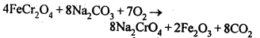
The yellow solution of sodium chromate is filtered and acidified with sulphuric acid to give a solution from which orange sodium dichromate, Na2Cr,07.2H20 can be crystallised.
Sodium dichromate is more soluble than potassium dichromate. The latter is therefore, prepared by treating the solution of sodium dichromate with potassium chloride.
Orange crystals of potassium dichromate crystallise out. The chromates and dichromates depending upon pH of the solution. If pH of potassium dichromate is increased it is converted to yellow potassium chromate.
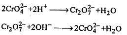
8.15. Describe the oxidising action of potassium dichromate and write the ionic equations for its reaction with:
(i)iodide
(ii)iron (II) solution and
(iii)H2S
Sol: K2Gr207is a powerful oxidising agent. In dilute sulphuric acid medium the oxidation state of Cr changes from+6 to + 3. The oxidising action can be represented as follows:
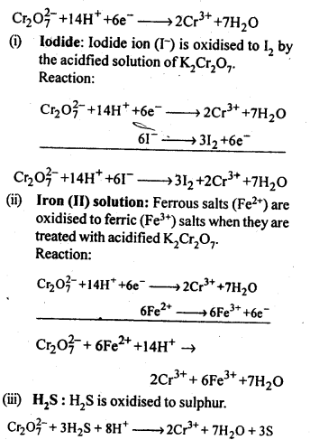
8.16. Describe the preparation of potassium permanganate. How does the acidified permanganate solution react with (i) iron (II) ions (ii) S02 and (iii) oxalic acid? Write the ionic, equations for the reactions.
Sol: Potassium permanganate (KMn04) is prepared by the fusion of a mixture of pyrolusite (Mn02),potassiufn hydroxide and oxygen, first green coloured potassium manganate is formed. 2MnO2 + 4KOH + 02 —> 2K2Mn04+2H20 The potassium manganate is extracted by water, which then undergoes disproportionation in neutral or acidic solution to give potassium permanganate.
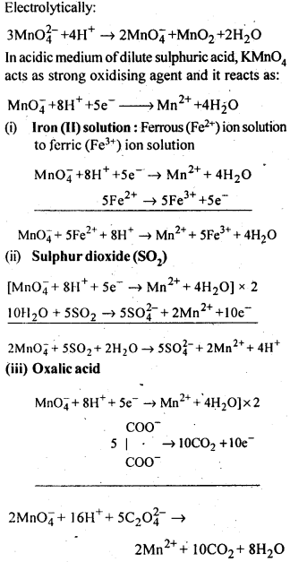
8.17. For M2+/M and M3+/M2+ systems the E° values
for some metals are as follows:
Cr2+/Cr –> -0.9 V
Mn2+/Mn –> -1.2V
Fe2+/Fe –> -0.4 V
Cr3+/Cr2+ –> -0.4 V
Mn3+/Mn2+ –>+ 1.5V
Fe3+/Fe2+ –>+ 0.8V
(ii)the ease with which iron can be oxidised as compared to a similar process for either chromium or manganese metal.
Sol: (i) Cr3+/Cr2+ has negative reduction potential. Hence, Cr3+ cannot be reduced to Cr2+. Mn3+/Mn2+ has a large positive reduction potential. Hence, Mn3+ can be easily reduced to Mn2+. Fe3+/Fe2+ has small positive reduction potential. Hence, Fe3+ is more stable than Mn3+ but less stable than Cr3+.
(ii)From the E° values, the order of oxidation of the metal to the divalent cation is : Mn > Cr > Fe.
8.18. Predict which of the following will be coloured in aqueous solution?
Ti3+, V3+, Cu+, Sc3+, Mn2+, Fe3+, Co2+.
Sol: Only those ions will be coloured which have incomplete d-orbitals. The ions with either empty or filled d-orbitals are colourless. Keeping this in view, the coloured ions among the given list are :
Ti3+(3d1), V3+(3d2), Mn2+(3d5), Fe3+(3d5), Co2+ (3d7)
Sc3+ (3d°) and Cu+ (3d10) ions are colourless.
8.19. Compare the stability of +2 oxidation state for the elements of the first transition series.
Sol: In general, the stability of +2 oxidation state in first transition series decreases from left to right due to increase in the sum of first and second ionisation energies. However Mn2+ is more stable due to half filled d-orbitals (3d5) and Zn2+ is more stable due to completely filled d-orbitals (3d10).
8.20. Compare the chemistry of actinoids with that of the lanthanoids with special reference to
(i)electronic configuration,
(ii)atomic and ionic sizes and
(iii)oxidation state
(iv)chemical reactivity.
Sol: (i) Electronic configuration: The general electronic configuration of lanthanoids is [Xe]54 4f1-14 5d0-1 6s2 and that of actinoids is [Rn]86 5f0-14 6d0-1 7s2, lanthanoids . belong to 4 f series whereas actinoids belong to 5f-series.
(ii) Atomic and ionic sizes: Both lanthanoids and actinoids show decrease in size of their atoms or ions in + 3 oxidation state as we go from left to right. In lanthanoids, the decrease is called lanthanoid contraction whereas in actinoids, it is called actinoid contraction. The contratibn is greater from element to element in actinodes due to poorer shielding by 5f electrons.
(iii)Oxidation state: Lanthanoids show limited oxidation states (+ 2, + 3, + 4) out of which + 3 is most common whereas actinoids show +3, +4, +5, +6, +7 oxidation states.This is because of large energy gap between 4f 5d and 6s orbitals. However, actinoids show a large number of oxidation states because of small energy ap- between 5f 6d and Is orbitals.
(iv) Chemical reactivity: The earlier members
of the lanthanoids series are quite reactive similar to calcium but, with increase in atomic number, they behave more like aluminium. The metals combine with hydrogen when . gently heated in the gas. Carbides, Ln3C, Ln2C3 and LnC2 are formed when the metals are heated with carbon. They liberate hydrogen from dilute acid and burn in halogens to form halides. They form oxides M203 and hydroxides M(OH)3.
Actinoids are highly reactive metals, especially when finely divided. The action of boiling water on them gives a mixture of oxide and hydride and combination with most non-metals take place at moderate temperatures. HCl attacks all metals but most are slightly affected by nitric acid owing to the formation of protective oxide layers, alkalis have no action. Actinoids are more reactive than lanthanoids due to bigger atomic size and lower ionisation energy.
8.21. How would you account for the following:
(i) Of the d4 species, Cr2+ is strongly reducing while manganese (III) is strongly oxidizing.
(ii) Cobalt (II) is stable in aqueous solution but in the presence of complexing reagents it is easily oxidised.
(iii) The d1 configuration is very unstable in ions.
Sol: (i) E° value for Cr3+/Cr2+ is negative (-0-41 V) whereas E° values for Mn3+/Mn2+is positive (+1.57 V). Hence, Cr2+ ion can easily undergo oxidation to give Cr3+ ion and, therefore, act as strong reducing agent whereas Mn3+ can easily undergo’ reduction to give Mn2+ and hence act as an oxidizing agent.
(ii) Co (III) has .greater tendency to form coordination complexes than Co (II). Hence, in the presence of ligands, Co (II) changes to Co (III), i.e., is easily oxidized.
(iii) The ions with dx configuration have the tendency to lose the only electron present in d-subshell to acquire stable d° configuration. Hence, they are unstable and undergo oxidation or disproportionation.
8.22. What is meant by disproportionation? Give two examples of disproportionation reaction in aqueous solution
Sol: Disproportionation reactions are those in which the same substance undergoes oxidation as well as reduction, i.e., oxidation number of an element increases as well as decreases to form two different products.
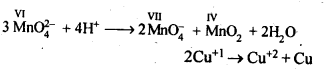
8.23. Which metal in the first transition metal series exhibits +1 oxidation state most frequently and why?
Sol: Cu with configuration [Ar] 4s13d10 exhibits +1 oxidation state and forms Cu+ ion because by losing one electron, the cation or positive ion acquires a stable configuration of d-orbitals (3d10).
8.24. Calculate the number of unpaired electrons in the following gaseous ions : Mn3+, Cr3+, V3+ and Ti3+. Which one of these is the most stable in aqueous solution.
Sol: Mn3+ = 3d1 = 4 unpaired electrons, Cr3+ = 3d3 = 3 electrons,V3+ = 3d2 = 2 electrons, Ti3+=3d1 = l electron.Out of these, Cr3+ is most stable in aqueous solution because of half-filled t2g level.
8.25. Give examples and suggest reasons for the following features of the transition metal chemistry:
(i) The lowest oxide of transition metal is basic the highest is amphoteric/ acidic.
(ii) A transition metal exhibits highest oxidation state ih oxides and fluorides.
(iii) The highest oxidation state is exhibited in oxoanions of a metal.
Sol: (i) The lower oxide of transition metal is basic because the metal atom has low oxidation state whereas higher once are acidic due to high oxidation state. For example, MnO is basic whereas Mn2O7is acidic. Oxides in lower oxidation state are ionic hence basic. Oxides in higher oxidation state are covalent hence acidic
(ii) A transition metal exhibits higher oxidation states in oxides and fluorides because oxygen and fluorine are highly electronegative elements, small in size and strongest oxidising agents. For example, osmium shows an oxidation states of + 6 in O5F6and vanadium shows an oxidation states of + 5 in V2O5.
(iii) Oxo metal anions have highest oxidation state, e.g., Cr in Cr2072- has an. oxidation state of + 6 whereas Mn in Mn04– has an oxidation state of + 7. This is again due to the combination of the metal with oxygen, which is highly electronegative and oxidizing agent.
8.26. Indicate the steps in the preparation of:
(i)K2Cr207from chromite ore
(ii)KMn04 from pyrolusite ore.
Sol:
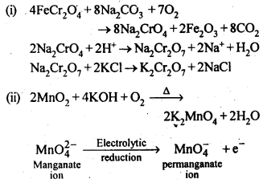
8.27. What are alloys? Name an alloy which contains some lanthanoid metals. Mention its uses.
Sol: An alloy is a homogeneous mixture of different metals or metals and non-metals.
Misch metal is an alloy of cerium (Ce). lanthanum (La), neodymium (Nd), iron (Fe) and traces of carbon, sulphur, aluminium etc. It is used in making parts of jet engines.
8.28. What are inner transition elements? Decide which of the following atomic numbers are the atomic numbers of the inner transition elements: 29,59,74,95,102,104.
Sol: The f-block elements in which the. last electron enters into f-sub shell-are called inner-transition elements. These include lanthanoids (Z=58 to 71) and actinoids (Z=90 to 103). Thus, the elements with atomic numbers 59,95 and 102 are the? inner transition elements.
8.29. The chemistry of the actinoid elements is not so smooth as that of the lanthanoids. Justify this statement by giving some examples from the oxidation state of these elements.
Sol: Lanthanoids show limited number of oxidation state, viz, + 2, + 3 and + 4 (out of which + 3 is most common). This is because of large energy gap between 4f 5d and 6s subshells. The dominant oxidation state of actinoids is also + 3 but they show a number of other oxidation states also. For example, uranium (Z=92) and plutonium (Z – 94), show + 3, + 4, + 5 and + 6, neptunium (Z = 94) shows + 3, +4, + 5 and + 7, etc. This is because of the small energy difference between. 5f, 6d and 7s orbitals of the actinoids.
8.30. Which is the last element in the series of the actinoids? Write the electronic configuration of this element. Comment on the possible oxidation state of this element
Sol: Last actinoid=Lawrencium (Z = 103)
Electronic configuration = [Rn]86 5f14 6d1 7s2 Possible oxidation state = + 3.
8.31 Use Hund’s rule to derive the electronic configuration of Ce3+ ion, and calculate its magnetic moment on the basis of ‘spin-only’ formula.
Sol.
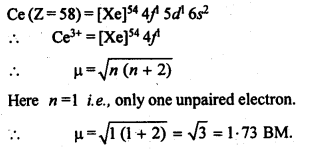
8.32. Name the members of the lanthanoid series which exhibit +4 oxidation state and those which exhibit +2 oxidation state. Try to co-relate this type of behaviour with the electronic configuration of these elements.
Sol: +4 oxidation state : 58Ce, 59Pr, 65Tb
+ 2 oxidation state : 60Nd, 62Sm, 63Eu, 69Tm, 70Yb.
In general +2 oxidation state is exhibited by the elements with configuration 5d06s2 so that two electrons may be easily lost. Similarly +4 oxidation state is shown by the elements which after losing four electrons acquire configuration either close to 4f0 or 4f7.
8.33. Compare the chemistry of actinoids with that of lanthanoids with reference to:
(i)Electronic configuration
(ii)Oxidation states
(iii)Chemical reactivity
Sol: (i)Electronic configuration : In lanthanoids 4f- orbitals are progressively filled whereas in actinoids 5f-orbitals are progressively filled.
(ii)Oxidation states : Lanthanoids shows +3 oxidation state. Some elements shows +2 and +4 oxidation state also. Actinoids shows +3, +4, +5 +6, +7 oxidation states. Although +3 and +4 are most common.
(iii)Chemical reactivity : Actinoids are more reactive than lanthanoids due to bigger atomic size and lower ionisation energy.
8.34. Write the electronic configurations of the elements with the atomic numbers 61,91,101 and 109.
Sol: Z=61 (Promethium, Pm) [Xe]544f55d0 6s2
Z = 91 (Protactinium, Pa) => [Rn]86 5f2 6d1 7s2
Z = 101 (Mendelevium, Md)=> [Rn]86 5f13 6d0 7s2
Z = 109 (Meitnerium, Mt) [Rn]86 5f14 6d7 7s2
8.35. Com pare the general characteristics of the first series of the transition metals with those of the second and third series metals in the respective vertical columns. Give special emphasis on the following points:
(i)electronic configurations
(ii)oxidation states
(iii)ionisation enthalpies and
(iv)atomic sizes
Sol: (i) Electronic configuration: The elements in the same vertical column generally have similar electronic configuration. First transition series shows only two exceptions, i.e., Cr = 3d5 4s1 and Cu = 3d10 4s1. But second transition series shows more exceptions, i.e., Y = 4d1 5s2, Nb = 4d1 , 5s1 , Mo=4d5 5s1 , Ru=4d1 5s1 , Rh=4d8 5s1 , Pd , =4d10 5s°, Ag=4d10 5s1 . In third transition, there are two exceptions, i.e„ Pt = 5d9 6s1 and Au = 5d10 6s1 .
Thus in the same vertical column, in a number of cases, the electronic configuration of the elements of three series are not similar.
(ii) Oxidation states: The elements in the same vertical column generally show similar oxidation states. The number of oxidation states shown by the elements in the middle of each series is maximum and minimum at the extreme ends.
(iii)Ionization enthalpies: The first ionization enthalpies in each series generally increases gradually as we more from left to right though some exceptions are observed in each series. The first ionization enthalpies of some elements in the second (4d) series are higher while some of them have lower value than the elements of 3d series in the same vertical column. However, the first ionization enthalpies of third (5d) series are higher than those of 3d and Ad series. This is because of weak shielding of nucleus by 4f-electrons in the 5d series.
(iv)Atomic sizes: In general, ions of the same charge or atoms in a given series show progressively decrease in radius with increasing atomic number though the decrease is quite small. But the size of the atoms of the Ad series is larger then the corresponding elements of the 3d series whereas size of elements of the 5d-series nearly the same as those of Ad series because of lanthanoid contraction.
8.36. Write down the number of 3d electrons in each of the following ions:Ti2+, V2+, Cr3+, Mn2+, Fe2+, Fe2+, Co2+, Ni2+ and Cu2+. Indicate how would you expect the five 3d orbitals to be occupied for these hydrated ions (octahedral).
Sol:
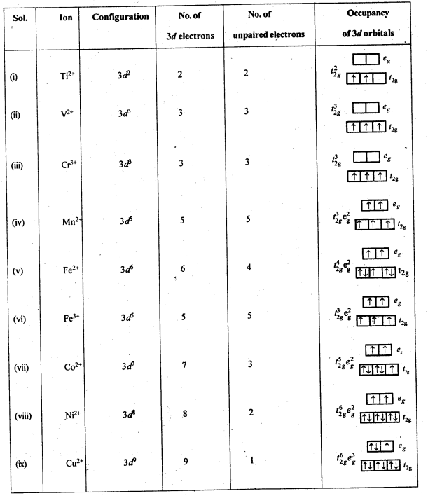
8.37. Comment on the statement that elements of first transition series possess many properties different from those of the heavier transition elements.
Sol: The heavier transition elements belong to fourth (Ad) and fifth (5d) and sixth (6d) transition series. Their properties are expected to be different from the elements belonging to the first (3d) series due to the following reasons :
(i) The atomic radii of the elements belonging to Ad and 5d series are more due to greater number of electron shells. However, the difference in Ad and 5d transition elements are comparatively less because of lanthanoid contraction.
(ii) Because of stronger inter atomic bonding, the m.p. and b.p. of the elements of Ad and 5d series are higher.
(iii) Ionisation enthalpies are expected to decrease as we move from one series to the other. However, the values for the elements of 5d series are higher as compared to the elements belonging to the other two series due to lanthanoid contraction.
Actually atomic size decreases on account of it and effective nuclear charge increases. As a result, there is an increase in ionisation energy in case of 3d elements.
8.38. What can be inferred from the magnetic moment values of the following complex species?
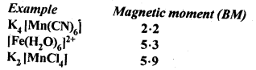
Sol:
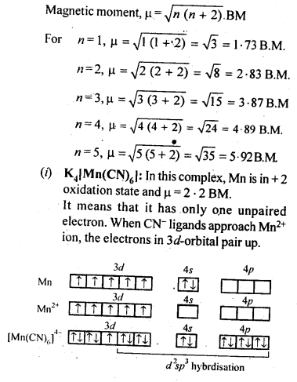
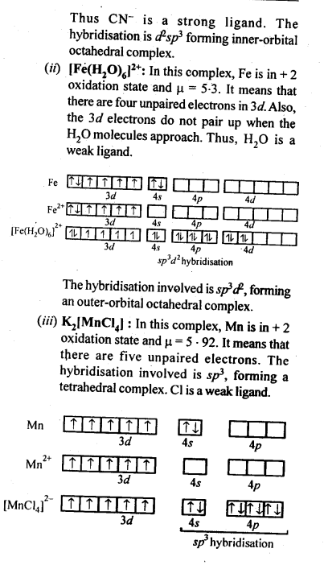
More Resources for CBSE Class 12: